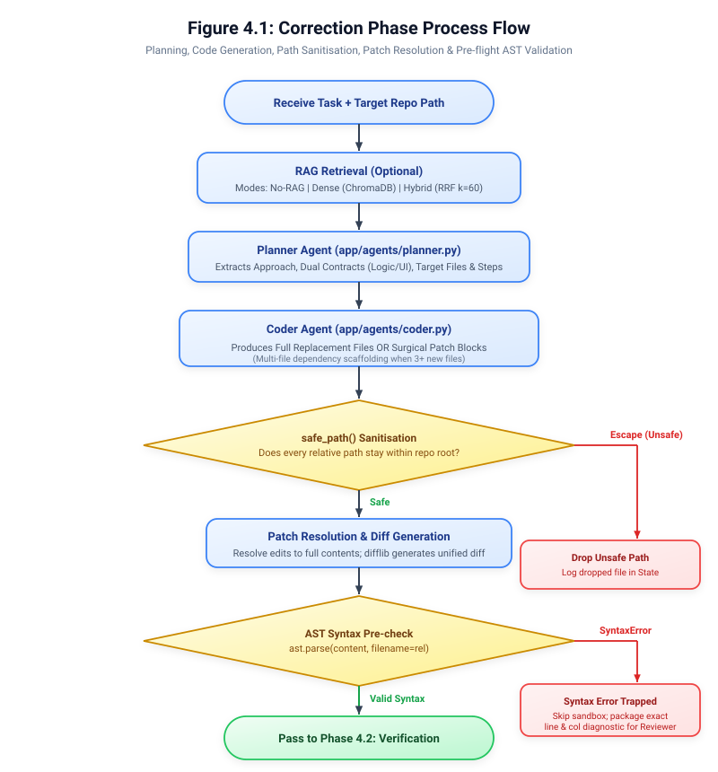
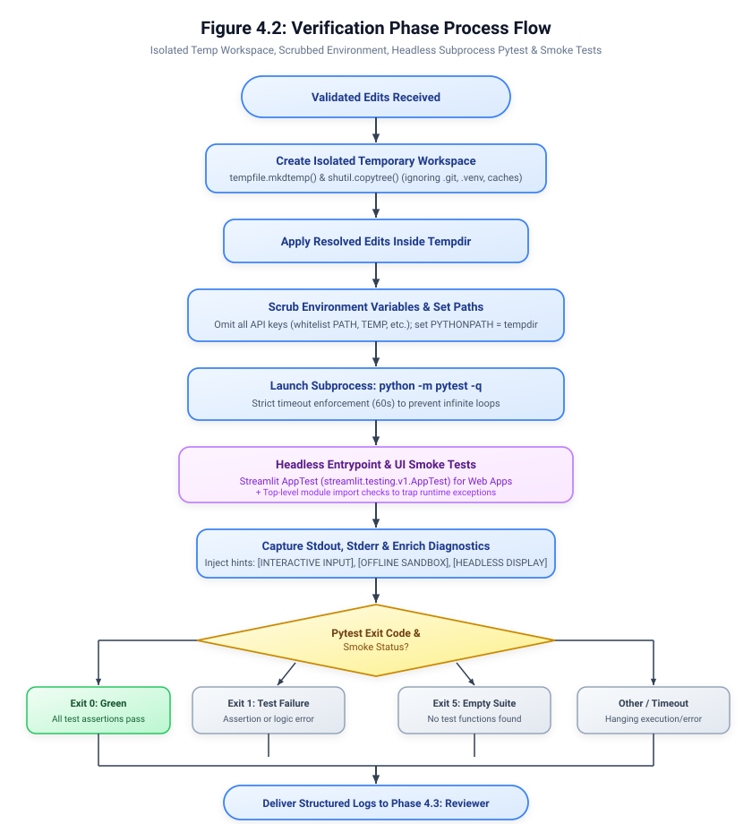
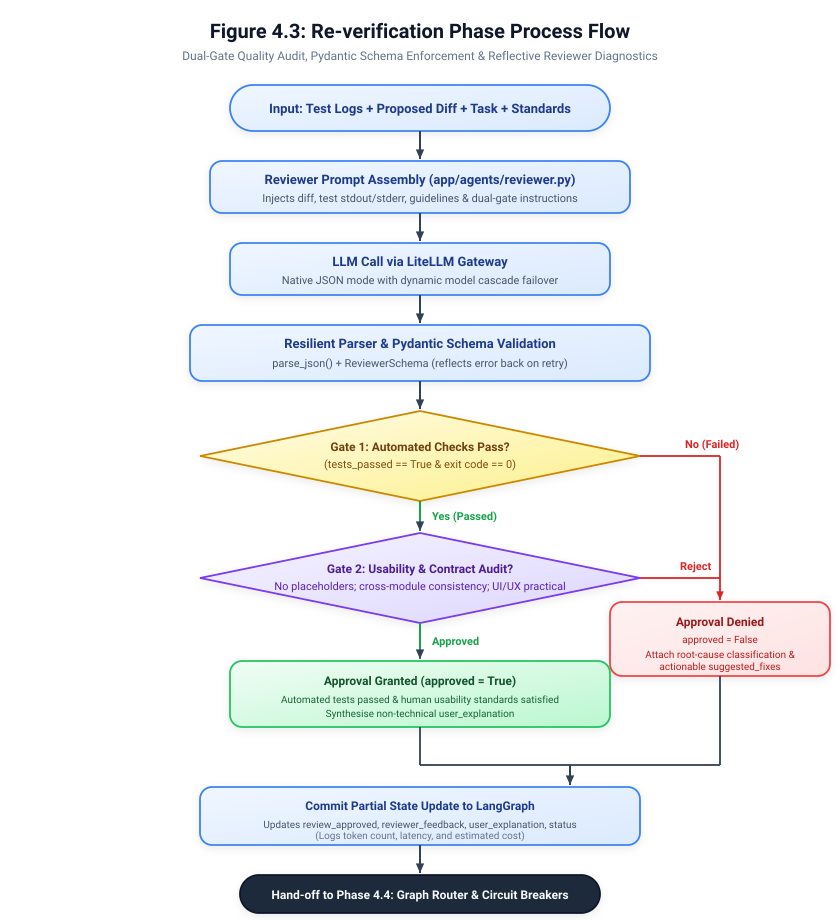
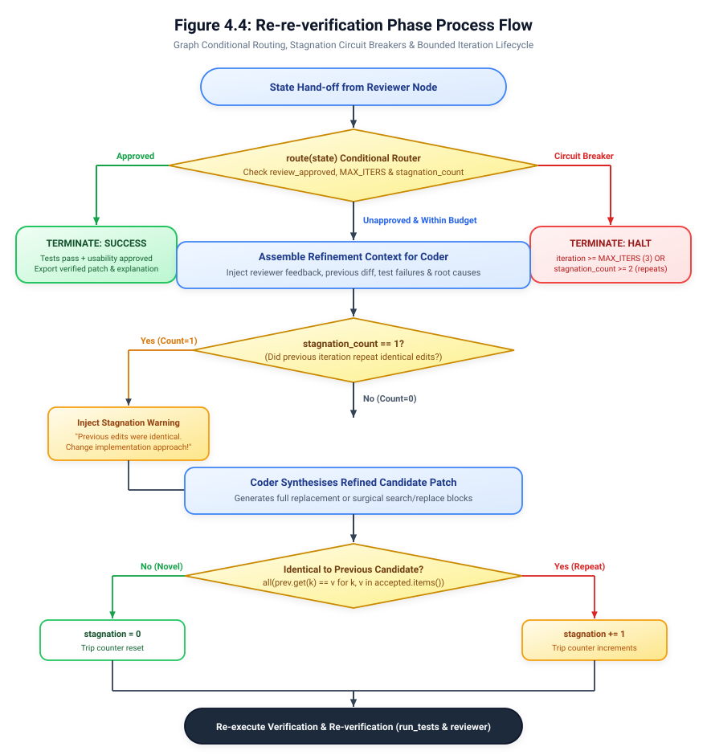

Publication-grade system process flows: Correction, Verification, Re-verification, and Circuit Breakers
Planning, Code Generation, Safe Path Sanitisation, Patch Resolution & AST Pre-check

Isolated Temp Directory, Scrubbed Environment, Headless Subprocess Pytest & UI Smoke Checks

Dual-Gate Audit (Tests + Operational Usability), Pydantic Validation & Reflective Feedback

LangGraph Conditional Router, Stagnation Repeat-Edit Breakers & Bounded Iteration Lifecycle
